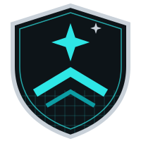

| Spoofing | pass | Tokens signed and validated at the gateway (ADR-102) |
| Tampering | pass | TLS 1.3 on I-01 |
| Repudiation | T1-R · Low | Order audit trail: not documented |
| Information disclosure | T2-I · Medium | Object-level authorization: not documented |
| Denial of service | T3-D · High | Per-route limits only; no per-client quota |
| Elevation of privilege | pass | Scopes checked per route at the gateway |
This is trust boundary TB-01, from the STRIDE report in analysis/STRIDE-2026-11-03.md. It is where the customer's browser reaches API Gateway (I-01).
Three categories pass. Three findings stay open:
For slides, I can write the same figure as an image in my own look.
